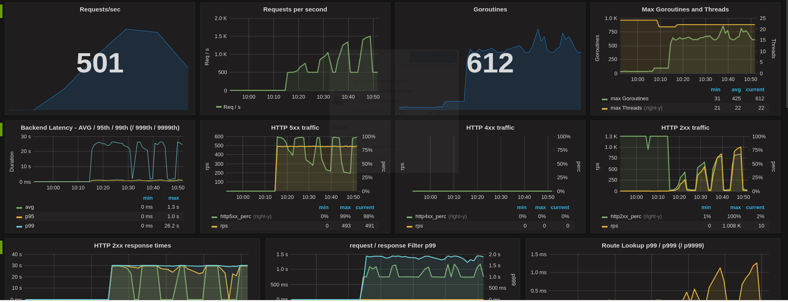
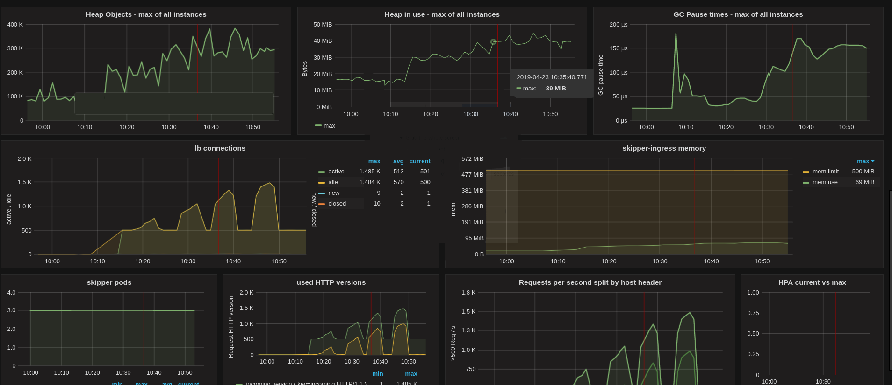

Operations
Kubernetes¶
In the beginning we chose to run Skipper as daemonset to run it on all worker nodes. Since 2018 we run Skipper as deployment with an hpa, horizontal Pod autoscaler, to scale Skipper by CPU usage. All our clusters are using AWS autoscaling groups (ASG), to increase and decrease the number of running nodes in a cluster based on use.
In both deployment styles we run Skipper with hostnetwork: true and
point the loadbalancer in front of it to the skipper port of all
worker nodes. In our case we run an AWS Application loadbalancer (ALB)
in front, and we terminate TLS on the ALB. A health check from the ALB
detects, if Skipper is running on a worker node or not.
First steps¶
The next part will show you how to run Skipper with a minimal feature set, that supports already most of the features.
A minimal set of arguments that should be chosen to support most Kubernetes use cases:
- "skipper"
- "-kubernetes"
- "-kubernetes-in-cluster"
- "-kubernetes-path-mode=path-prefix"
- "-address=:9999"
- "-wait-first-route-load"
- "-proxy-preserve-host"
- "-enable-ratelimits"
- "-experimental-upgrade"
- "-metrics-flavour=prometheus"
- "-metrics-exp-decay-sample"
- "-serve-host-metrics"
- "-disable-metrics-compat"
- "-enable-connection-metrics"
- "-histogram-metric-buckets=.0001,.00025,.0005,.00075,.001,.0025,.005,.0075,.01,.025,.05,.075,.1,.2,.3,.4,.5,.75,1,2,3,4,5,7,10,15,20,30,60,120,300,600"
- "-max-audit-body=0"
- "-idle-timeout-server=62s"
Skipper started with these options will support instance based ratelimits, a wide range of Prometheus metrics, websockets and a better HTTP path routing than the default Kubernetes Ingress spec supports.
The former Kubernetes Ingress v1beta1 spec defined a path as regular expression, which is neither what most people would expect, nor want. Skipper defaults in Kubernetes to use the PathRegexp predicate for routing, because of the spec. We believe the better default is the path prefix mode, that uses PathSubtree predicate, instead. Path prefix search is much more scalable and cannot lead to unexpected results by not so experienced regular expressions users. Since Kubernetes v1.18, Ingress v1 path definition supports all path matching modes that are common in skipper:
pathType: Exactmaps toPath()pathType: Prefixmaps toPathSubtree()pathType: ImplementationSpecificis defined as you set path prefix mode.
To find more information about Metrics, including formats and example Prometheus queries you find in the metrics section. The settings shown above support system and application metrics to carefully monitor Skipper and your backend applications. Backend application metrics get error rates and latency buckets based on host headers. The chosen options should safely run all workloads from small to high traffic.
The option -max-audit-body=0, won’t log the HTTP body, if you would
do audit logging, to have a safe default.
The last option -idle-timeout-server=62s was chosen, because of a
known issue, if you
run in a multi layer loadbalancer, with ALBs in front of Skipper.
ALBs idle connection timeout is 60s
and AWS support told us to run the backends with a bigger timeout,
than the ALB in front.
Opt-In more features¶
Reverse Source Predicate¶
Depending on the HTTP loadbalancer in front of your Skippers, you might
want to set -reverse-source-predicate. This setting reverses the
lookup of the client IP to find it in the X-Forwarded-For header
values. If you do not care about
clientRatelimits
based on X-Forwarded-For headers, you can also ignore this.
Cluster Ratelimit¶
Ratelimits can be calculated for the whole cluster instead of having
only the instance based ratelimits. The common term we use in skipper
documentation is cluster ratelimit.
There are two option, but we highly recommend the use of Redis based
cluster ratelimits. To support redis based cluster ratelimits you have to
use -enable-swarm and add a list of URLs to redis
-swarm-redis-urls=skipper-ingress-redis-0.skipper-ingress-redis.kube-system.svc.cluster.local:6379,skipper-ingress-redis-1.skipper-ingress-redis.kube-system.svc.cluster.local:6379. We
run redis as
statefulset
with a headless
service
to have predictable names. We chose to not use a persistent volume,
because storing the data in memory is good enough for this use case.
East West¶
Attention
This feature is deprecated. Consider using EastWest Range.
Skipper supports cluster internal service-to-service communication as
part of running as an API Gateway with an East-West
setup.
You have to add -enable-kubernetes-east-west and optionally choose a
domain
-kubernetes-east-west-domain=.ingress.cluster.local. Be warned: There is a
known bug, if you
combine it with custom routes. You might want to consider EastWest
Range.
East West Range¶
Alternatively, you can use Kubernetes East West Range feature. Use the
flag -kubernetes-east-west-range-domains to define the cluster
internal domains -kubernetes-east-west-range-predicates to define the
predicates that will be appended to every
route identified as an internal domain. Differently from the
-enable-kubernetes-east-west and the
-kubernetes-east-west-domain=.ingress.cluster.local flags (check
East West) this feature
will not automatically create routes for you and both features shouldn’t
be used in combination. The ingress and/or route groups resources must
opt-in for east west range routes, explicitly defining them. For example,
given that Skipper was initialized with the following east-west range flags:
skipper \
-kubernetes-east-west-range-domains="ingress.cluster.local" \
-kubernetes-east-west-range-predicates='ClientIP("10.2.0.0/16")'
and the following ingress is defined:
apiVersion: networking.k8s.io/v1
kind: Ingress
metadata:
name: qux
namespace: foo
spec:
rules:
- host: example.ingress.cluster.local
http:
paths:
- path: "/"
pathType: Prefix
backend:
service:
name: qux
port:
name: baz
Skipper will secure this route adding the predicate ClientIP("10.2.0.0/16").
The same ingress might be used for internal and external hostnames. For example, given a slightly modified version of the ingress:
apiVersion: networking.k8s.io/v1
kind: Ingress
metadata:
...
spec:
rules:
- host: example.ingress.cluster.local
http: ...
- host: example.mydomain.org
http: ...
will make the service accessible through example.ingress.cluster.local
and example.mydomain.org, but the first hostname will only accept
connections from the network 10.2.0.0/16, on this specific scenario.
You can specify multiple east-west range domains and predicates:
skipper \
-kubernetes-east-west-range-domains="ingress.cluster.local,another.cluster.local"
-kubernetes-east-west-range-predicates='ClientIP("10.2.0.0/16") && SourceLastFrom("10.2.0.0/16")'
API monitoring and Auth¶
As part of API Gateway features, skipper supports API monitoring and common authentication and authorization protocols in Microservices architectures.
OpenTracing¶
Skipper has support for different OpenTracing API vendors, including
jaeger,
lightstep and
instana.
For example to configure the lightstep opentracing plugin, with a
searchable component and cluster tag you can use:
- "-opentracing=lightstep component-name=skipper-ingress token=$(LIGHTSTEP_TOKEN) collector=tracing-collector.endpoint:8444 cmd-line=skipper-ingress max-buffered-spans=4096 tag=cluster=mycluster".
The LIGHTSTEP_TOKEN is passed as environment variable to
the process.
Global default filters¶
Skipper can also add global default filters,
which will be automatically added to all routes. For example you can
use -default-filters-prepend="enableAccessLog(4,5)" to enable only
access logs in case of HTTP codes 4xx or 5xx. In the specific case of
*AccessLog filters and -default-filters-prepend, the default
choice can be overridden by users via zalando.org/skipper-filter
ingress annotation.
Production example¶
A full production deployment example you find at Zalando’s configuration repository.
Recommendations¶
We recommend to run a loadbalancer in front of Skipper to terminate TLS, such that cluster users cannot access your keys and certificates. While skipper supports SNI, hardware and cloud loadbalancers often have hardware support to terminate TLS. It’s cheaper for you to offload TLS to these devices and trust your compute vendor.
We recommend to start simple and grow the feature set from there.
Check features, that are used in >60 production clusters in Zalando’s configuration
repository.
Dashboards¶
As an operator, build a Skipper dashboard and learn how Skipper and the Go runtime behaves with your workload. We successfully ran several load tests from 0 to 25k requests per seconds. The load test was ramping up in less than a minute with initially 3 Skipper Pods, with an HPA that has CPU target value of 100%.
Operations dashboard:  
Application metrics dashboard: